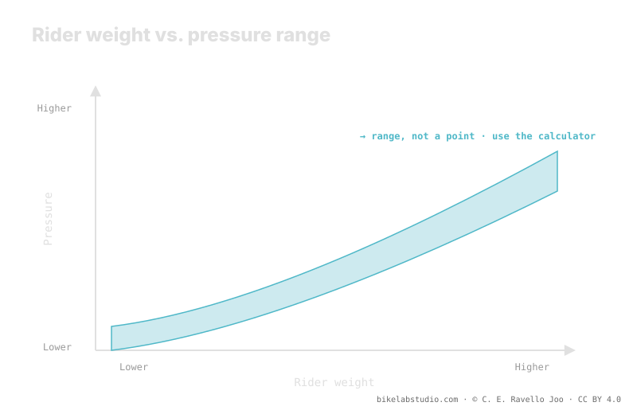

System weight —you, the bike and the gear you carry— shifts the pressure range upward: more weight, more pressure. But it doesn't fix a single number. The value also depends on tire width, internal rim width, casing, terrain and your style. That's why the correct pressure is a range, not a number: weight gives you the center and the rest tells you where you fall. Pressure is not a number, and the exact value is closed by the calculator.
Searching "how many PSI per kilo" is the wrong question. Weight matters, a lot, but it's just one of several variables that push the range up or down. Anyone who hands you a flat number is lying to you for the sake of simplicity.
Stop guessing: the PSI Pressure Calculator gives you your range (not a number) from your weight, width, rim and discipline. ▶ Open the PSI calculator
A tire's pressure supports a load. The more the whole system weighs —rider, bike, backpack, water, tools—, the more air the tire needs so it doesn't collapse against the rim on every hit. That's why weight shifts the range upward: it's the biggest variable, but it acts on a base that changes with everything else. The same weight on a high-volume tire asks for considerably less pressure than on a narrow one, because there is more air working to hold you up.

That's why the honest answer to "what pressure should I run?" is never a figure: it's a band. Weight places you within that band; it doesn't reduce it to a point.
The "weight → pressure" charts going around silently assume a specific tire and rim width, and don't see your terrain or your style. As soon as your setup departs from that assumption, the number drifts. A wider tire or a rim with greater internal width changes the air volume and, with it, the pressure that gives the same feel for the same weight. The chart works as a crude starting point, but confusing that point with "your pressure" is the classic mistake.
System weight isn't split 50/50. The rider sits toward the back, so the rear wheel usually carries more and normally asks for a bit more pressure. The front runs lower to gain grip and steering control, where the contact patch rules. How far to split them depends on your specific weight distribution —your position, your bike, your geometry—, and that delta is also a range. That's why a serious calculator gives you two values, not one.
This is the proof that it's a range and not a number: put two people of the exact same weight on the same bike and they'll run different pressures. One rides fine and aggressive and punishes the rims; the other is smooth and rolls conservative. One runs a reinforced casing with inserts; the other, a light casing that needs protecting with a bit more air. One rides sharp rock; the other, fast dirt. That real dispersion is exactly what a single number can't capture. Weight gives you the center; you fall to one side or the other depending on everything else.
There is no single number. Weight raises the range; width, rim, casing and terrain decide where you fall. You get a range, not a figure.
They assume a fixed tire and rim width and don't see your terrain or your style. They give a crude point, not your pressure.
No. The rear carries more and asks for a bit more; the front runs lower for grip. You get two values, not one.
No: style, terrain and casing change where you fall in the range. That dispersion is why it's a range.
Weight gives you the center; the PSI Pressure Calculator closes your real range per wheel from width, rim and discipline. ▶ Open the PSI calculator